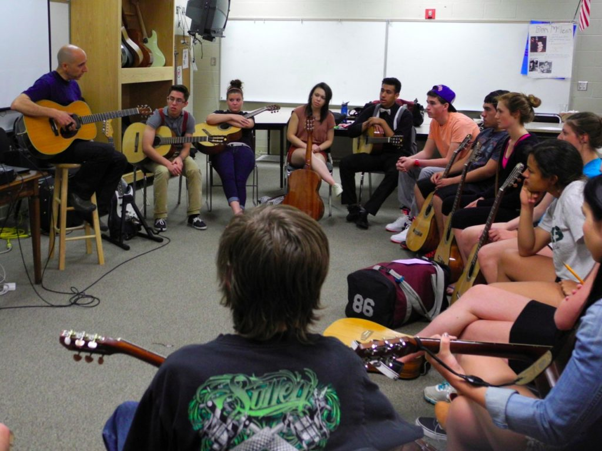
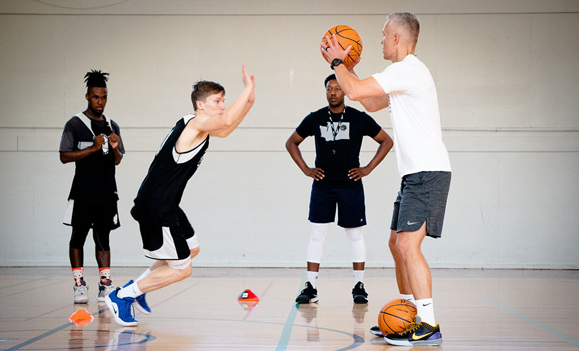
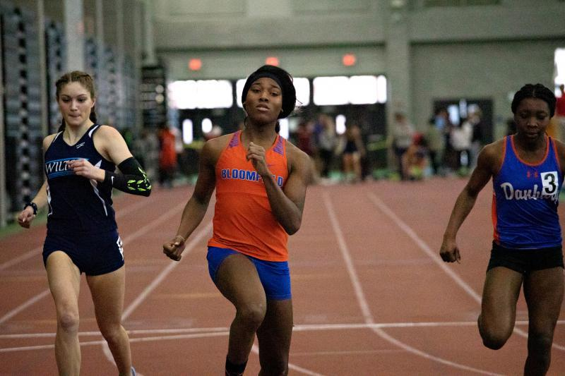
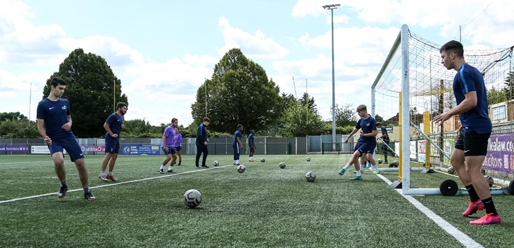

ABOUT THE CAMPUS
The Campus was founded by Mr. Montero in 1948 and it is one of the best universities here in the Philippines because of its longetivity and it is considered as one of the most number of students enrolled here in the Philippines due to its incredibly offered strands and programs.
In addition to that, The campus has the most visited number of students online due to its free-tuition fee and no requirement of grades.
The Greenfield campus consists of 19 buildings (nine classroom buildings and 10 other buildings for administrative and auxiliary functions)
located at 15 adr street 5015, lot in 2401 Taft Avenue Malate, Manila. The campus faces to its right the main campus of
Greenfield Institute School.
Opening hours: everyday from 6am to 9pm.
Address: 15 adr street 5015, lot in 2401 Taft Avenue Malate, Manila
CLASSROOM
The classroom will also give the students their deserved freedom to raise questions, discuss perspectives, maybe teach the room, and even decide the day’s proceedings. In an ideal way, education will be bidirectional where control will rest equally on both the teachers and students.
LIBRARY
To succeed today, libraries must master many different roles--some traditionally associated with libraries, some not. Their new, multi-faceted missions must be supported with great design, strong amenities, and popular programs. That's a lot to juggle, but when everything works together, libraries become places that anchor community life and bring people together. To help libraries fulfill their potential as neighborhood institutions, PPS offers the following strategies as a roadmap to success.
PROGRAMS
PIANIST
If you play the piano, you are a pianist. The word most often describes a professional piano player, like a pianist in the symphony. A pianist might work playing jazz standards in a restaurant or performing solo shows on stages all over the world.
DRUMMER
A drummer is a musician who plays the drum set. Drummers provide rhythm and beat to a performance, play the drum during studio recording sessions, and contribute to the production of music.GUITARIST
Guitarists play guitars for live performances or recordings. They may use different types of guitars like classic, acoustic, electric, or bass, and play in a band or as a solo act. Guitarists may also develop backing tracks or provide guitar lessons. SPORT
BASKETBALL
Basketball is a game played between two teams of five players each on a rectangular court, usually indoors. Each team tries to score by tossing the ball through the opponent's goal, an elevated horizontal hoop and net called a basketThe main objective of basketball is to make a goal and score points. A goal is made by shooting the ball through the basket or hoop. The goal post or basket for a team is in the opponent's court. VOLLEYBALL
volleyball, game played by two teams, usually of six players on a side, in which the players use their hands to bat a ball back and forth over a high net, trying to make the ball touch the court within the opponents' playing area before it can be returned.The object of the game is to send the ball over the net in order to ground it on the opponent's court, and to prevent the same effort by the opponent. The team has three hits for returning the ball (in addition to the block contact).
ATHLETICS
The name is derived from where the sport takes place, a running track and a grass field for the throwing and some of the jumping events. Track and field is categorized under the umbrella sport of athletics, which also includes road running, cross country running and racewalking.In fact, there are five different kinds of track and field athletes. These include sprinters, distance runners, hurdlers, jumpers, and throwers. The first three compete in races on the track, while the jumpers and throwers make up the field athletes. BASEBALL
a game played with a bat and ball between two teams of nine players each on a large field having four bases that mark the course a runner must take to score also : the ball used in this game.The goal of the game is to score more points (runs) than the other team. The players on the team at bat attempt to score runs by touching all four bases, in order, set at the corners of the square-shaped baseball diamond.
FOOTBALL
any of several games played between two teams on a usually rectangular field having goalposts or goals at each end and whose object is to get the ball over a goal line, into a goal, or between goalposts by running, passing, or kicking: such as. a British : soccer. b British : rugby.is a game involving two teams of 11 players who try to maneuver the ball into the other team's goal without using their hands or arms. The team that scores more goals wins. TAEKWONDO
With its practical means of self defense, its complete regiment of physical conditioning, and its aid to improved concentration and mental performance, Taekwondo offers a total fitness program integrating mind, body, and spirit. Today Taekwondo is the most recognized Korean Martial Art.In Taekwondo, belt colors indicate the level of training (rank). The belt system acts as an incentive for the student to advance to the next level of training. Belt requirements vary between Taekwondo, Karate, Jiu Jitsu, and other forms of martial arts. Standards also vary from school to school.